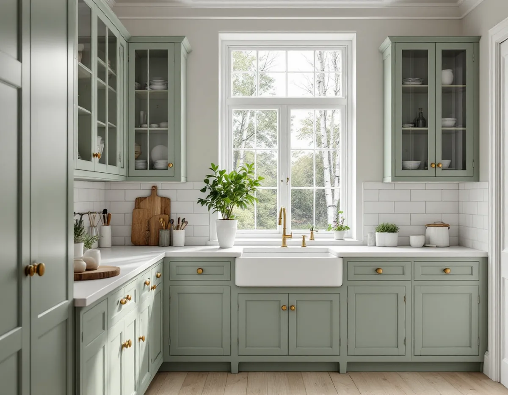
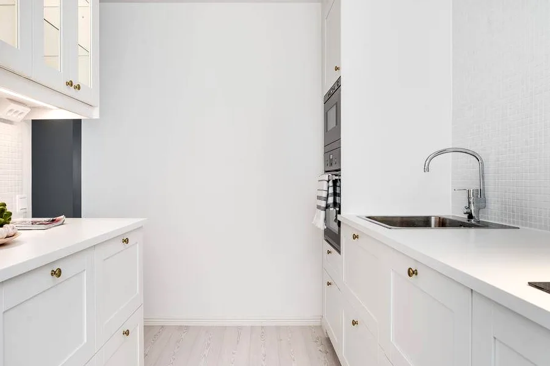

Besök och inventering
Vi ser var stam, kanal och el finns och om det finns spår av ett äldre andra kök.

Älvsjö villastad fick vatten och avlopp ovanligt tidigt, och många villor byggdes med mer än en lägenhet.
Beskriv jobbet kort.
Något blev fel. Kontrollera uppgifterna eller ring 08 12 410 276.
Vi tittar på jobbet på plats innan du får offert.
Du ser vad som ingår och vad det kostar.
Vi drar av ROT direkt och sköter ansökan.
Geal Entreprenad AB, Bromma. Org.nr 559303-7566.

I dag betyder det att ett hus kan ha rör från flera epoker och spår av ett andra kök. Geal Entreprenad AB gör om kök i Älvsjö, Långbro och Herrängen med gratis platsbesök, skriftligt kostnadsförslag och ROT-avdraget direkt på fakturan.
Stadsmuseets förortsinventering av Älvsjö villastad berättar att AB Hem på landet köpte två markområden från Älvsjö säteri 1908 och 1911, på omkring 13 och 11 hektar. Tomtförsäljningen började i december 1908, och omkring 1915 var uppåt hundra tomter bebyggda.
En orsak till att området växte så snabbt var att det ovanligt tidigt fick vatten, avlopp och ordnade vägar. Bolaget lämnade gatumark till Stockholms stad och fick i gengäld vattenledningar framdragna utan kostnad, och staden medverkade till avloppet. Som jämförelse fick Örby vatten och avlopp först i slutet av 1930-talet. För Älvsjö fastställdes en stadsplan redan 1921.
För köket betyder det att installationerna i en Älvsjövilla kan ha bytts och byggts på i många omgångar under mer än hundra år. Innan en ny plan ritas vill vi därför se var stammen går och hur avloppet är anslutet under golvet.
Inventeringen skriver att villorna i allmänhet var på två, tre eller fyra rum och kök, men att husen ibland rymde flera lägenheter där den eller de minsta var avsedda för uthyrning. Bland nybyggarna fanns enligt inventeringen hantverkare och tjänstemän, till exempel snickare, målare och byggmästare.
Ett sådant hus kan i dag ha en övervåning med igensatta anslutningar efter ett kök som inte längre används. Att slå samman lägenheter kräver enligt Stockholms stad inget bygglov, men du kan behöva göra en anmälan och invänta startbesked. Att dela en lägenhet till två kräver däremot bygglov.
När ett gammalt kök tas bort ska avloppet och vattnet pluggas där de inte längre behövs, och den gamla imkanalen antingen användas för det nya rummet eller tas ur bruk på ett sätt som sotaren godtar. Det är detaljer som är lätta att missa när två kök blir ett.
Ett kök behöver enligt stadens sida om att flytta kök tillräcklig frånluft och ska uppfylla kraven för imkanal. Ska spisen flyttas bort från den befintliga kanalen måste en ny dras, och påverkar den nya fläkten eller kanalen ventilationsflödena räknas det som en väsentlig ändring som kräver anmälan.
I en villa med inredd vind kan en ny kanal behöva gå genom flera bjälklag och ut genom taket. Ta hål i bjälklag eller bärande delar kan påverka konstruktionen, och då ska en konsult bedöma det. Staden råder också till att fråga sotaren tidigt, eftersom en del äldre kanaler inte har de mått som ett modernt kök kräver.
Ska kanalen ut genom taket samordnar vi genomföringen och plåten runt den med takläggare i Älvsjö, så att taket blir tätt igen direkt efter att hålet tagits upp.
Inventeringen beskriver två vanliga villatyper från 1910-talet: friliggande hus med vit slätputsad bottenvåning, gavelspetsar med mörkbrun panel på förvandring och brant tegeltak, och hus med falurödfärgad träpanel och vita snickerier. Båda finns kvar i nästan ursprungligt skick, och det var ganska vanligt att ritningar återanvändes från andra områden som bolaget byggde.
I de husen ligger köket ofta intill en matsal eller ett mindre rum. Att öppna väggen mellan dem är en vanlig önskan. Om väggen bär bjälklaget går inte att se på ytan, och påverkas den bärande konstruktionen krävs anmälan och startbesked. Därför låter vi en konstruktör titta på väggen innan något rivs.
Ytskikten i ett gammalt kök kan vara lagda i flera lager, och golvet under de gamla skåpen saknar ibland ytskikt helt. Det tar vi med i kostnadsförslaget från början.
Vi ser var stam, kanal och el finns och om det finns spår av ett äldre andra kök.
Ska en vägg öppnas eller ett bjälklag få hål bedömer en konstruktör det först.
Rivning, installationer och montering redovisas var för sig, med anmälan om den krävs.
Gamla kök tas bort och anslutningar som inte behövs sätts igen.
Ny kanal, rör och el dras, ytskikt görs klara och stommen monteras.
Vitvaror och fläkt provas och vi går igenom köket med dig.
Att riva väggar och bygga om planlösningen räknas som rotarbete hos Skatteverket, liksom att dra in vatten och avlopp och modernisera elen. Köksinredning och vitvaror ger avdrag för arbetet när de monteras i samband med en omfattande renovering. Avdraget är 30 procent av arbetskostnaden, högst 50 000 kr per person och år.
Byggstädning efter arbetet ger avdrag, men bortforsling av byggavfall gör det inte. Vi drar avdraget direkt på fakturan.
Om en ny imkanal behövs och hur den kan dras, om väggen mot matsalen bär, hur många gamla anslutningar som ska pluggas och hur många lager golv och väggar har. Efter ett gratis platsbesök får du ett skriftligt kostnadsförslag.
Planering, el, VVS, fläkt och väggar.
Köksrenovering i Stockholm →Takbyte, takbesiktning och plåtarbeten.
Takläggare i Älvsjö →Långbro, Herrängen och Långsjö.
Takrenovering i Älvsjö →Villatomten, prickmarken och vattnet.
Attefallshus i Älvsjö →Villorna, träbjälklaget och golvvärmen.
Badrumsrenovering i Älvsjö →Byggrätt, gamla planer och planändring.
Byggföretag i Älvsjö →Puts nedtill, panel upptill.
Fasadmålning i Älvsjö →Villastad, nya grannhus och puts på trä.
Fasadrenovering i Älvsjö →Fönster och tilläggsisolering.
Fönsterbyte i Älvsjö →Småspröjs och fönsterluckor.
Fönsterrenovering i Älvsjö →Golvvärme under trägolv i äldre villor.
Golvläggare i Älvsjö →Slipa och ge golvet en ny kulör.
Golvslipning i Älvsjö →Villastad, egnahem och småstugor i Älvsjö.
Målare i Älvsjö →Plåttak för solceller, kupor och verandor i Älvsjö.
Plåtslagare i Älvsjö →Staket, grind och plank i villastaden.
Snickare i Älvsjö →Vinden, kupan och byggrätten.
Takbyte i Älvsjö →Bårder och dekor i villastaden.
Tapetsering i Älvsjö →Byggrätt, trädgårdssida och volym.
Tillbyggnad i Älvsjö →Villastaden, elen och köket.
Totalrenovering i Älvsjö →Eller ring 08 12 410 276, mån–fre 08–17.
Beskriv jobbet kort.
Något blev fel. Kontrollera uppgifterna eller ring 08 12 410 276.